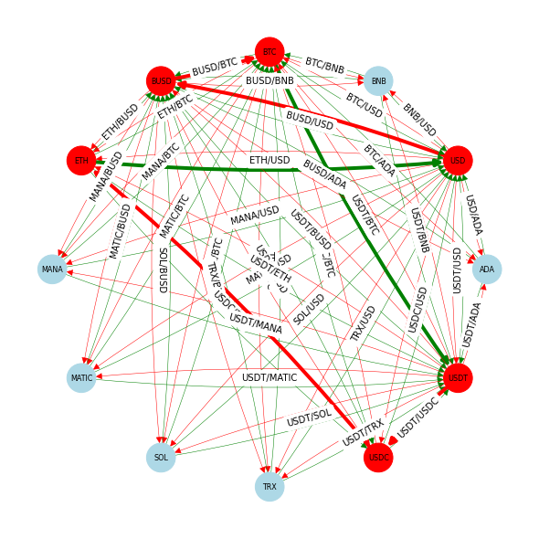
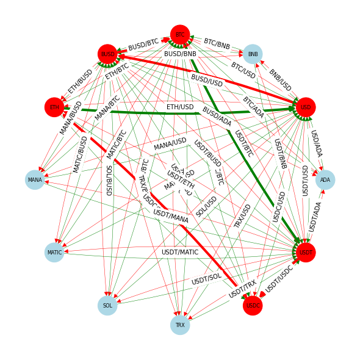

Cryptocurrency arbitrage search
Contents
Cryptocurrency arbitrage search#
Crpytocurrency exchanges are web services that enable the purchase, sale, and exchange of cryptocurrencies. These exchanges provide liquidity for owners and establish the relative value of these currencies. As of this writing (mid-2022), it is estimated cryptocurrencies have a collective market capitalization of more than 2 trillion USD. Cryptocurrency markets are constantly changing with new currencies, exchanges, the occasional collapse of a currency, and highly volatile prices.
The purpose of this notebook is to explore the efficiency of cryptocurrency exchanges by testing for arbitrage opportunities. An arbitrage exists if a customer can realize a net profit through a sequence of risk-free trades. The efficient market hypothesis assumes arbitrage opportunities are quickly identified and exploited by investors. As a result of their trading, prices would reach a new equilibrium so that in an efficient market, any arbitrage opportunities would be small and fleeting. The question here is whether it is possible, with real-time data and rapid execution, for a trader to profit from these fleeting arbitrage opportunities.
Installations and Imports#
# install Pyomo and solvers
import requests
import types
url = "https://raw.githubusercontent.com/mobook/MO-book/main/python/helper.py"
helper = types.ModuleType("helper")
exec(requests.get(url).content, helper.__dict__)
helper.install_pyomo()
helper.install_cbc()
pyomo was previously installed
cbc was previously installed
True
import os
import sys
from time import time
from timeit import default_timer as timer
import matplotlib.pyplot as plt
import networkx as nx
import numpy as np
import pandas as pd
import pyomo.environ as pyo
Cryptocurrency exchanges#
Cryptocurrency exchanges are digital marketplaces for buying and trading cryptocurrencies. Joining an exchange enables a user to maintain multiple currencies in a digital wallet, to buy and sell currencies, and to use cryptocurrencies for financial transactions. The open-source library ccxt currently supports real-time APIs for the largest and most common exchanges on which cryptocurrencies are traded. Here we import the library and list current exchanges supported by ccxt.
import ccxt
for i, exchange in enumerate(ccxt.exchanges):
print(f"{i+1:3d}) {exchange.ljust(20)}", end="" if (i+1) % 4 else "\n")
1) aax 2) ascendex 3) bequant 4) bibox
5) bigone 6) binance 7) binancecoinm 8) binanceus
9) binanceusdm 10) bit2c 11) bitbank 12) bitbay
13) bitbns 14) bitcoincom 15) bitfinex 16) bitfinex2
17) bitflyer 18) bitforex 19) bitget 20) bithumb
21) bitmart 22) bitmex 23) bitopro 24) bitpanda
25) bitrue 26) bitso 27) bitstamp 28) bitstamp1
29) bittrex 30) bitvavo 31) bkex 32) bl3p
33) blockchaincom 34) btcalpha 35) btcbox 36) btcmarkets
37) btctradeua 38) btcturk 39) buda 40) bw
41) bybit 42) bytetrade 43) cdax 44) cex
45) coinbase 46) coinbaseprime 47) coinbasepro 48) coincheck
49) coinex 50) coinfalcon 51) coinmate 52) coinone
53) coinspot 54) crex24 55) cryptocom 56) currencycom
57) delta 58) deribit 59) digifinex 60) eqonex
61) exmo 62) flowbtc 63) fmfwio 64) ftx
65) ftxus 66) gateio 67) gemini 68) hitbtc
69) hitbtc3 70) hollaex 71) huobi 72) huobijp
73) huobipro 74) idex 75) independentreserve 76) indodax
77) itbit 78) kraken 79) kucoin 80) kucoinfutures
81) kuna 82) latoken 83) lbank 84) liquid
85) luno 86) lykke 87) mercado 88) mexc
89) ndax 90) novadax 91) oceanex 92) okcoin
93) okex 94) okex5 95) okx 96) paymium
97) phemex 98) poloniex 99) probit 100) qtrade
101) ripio 102) stex 103) therock 104) tidebit
105) tidex 106) timex 107) upbit 108) vcc
109) wavesexchange 110) wazirx 111) whitebit 112) woo
113) xena 114) yobit 115) zaif 116) zb
117) zipmex 118) zonda
Representing an exchange as a directed graph#
Exchanges provide for trading between currencies. Trading done between two specific currencies is called a market; each exchange hosting multiple markets. ccxt labels each market with a market symbol that is common across exchanges and suitable for within-exchange and cross-exchange arbitrage analyses.
The market symbol is an upper case string with abbreviations for a pair of traded currencies separated by of a slash (/). The first abbreviation is the base currency, the second is the quote currency. Prices for the base currency are denominated in units of the quote currency. As an example, the symbol ETH/BTC refers to a market for the base currency Ethereum (ETH) quoted in units of the Bitcoin(BTC). The same market symbol can refer to offer to sell the base currency (a ‘bid’), or to an offer to sell the base currency (an ‘ask’).
An exchange can be represented by a directed graph can be constructed from the market symbols available on that exchange. Currencies correspond to nodes on the directed graph. Market symbols correspond to edges in the directed graph, with the source indicating the quote currency and the destination indicating the base currency.
The in-degree of a node is equal to the number of incoming edges. Out-degree is equal to the number of outgoing edges. Nodes with out-degrees greater than zero are highlighted because they represent currencies used to quote the price of other currencies. For all other nodes, a minimum_in_degree specifies a threshold value for in_degree for nodes to be displayed and retained for further analysis.
# global variables used in subsequent cells
exchange = ccxt.binanceus()
#exchange = ccxt.coinbase()
markets = exchange.load_markets()
symbols = exchange.symbols
def symbols_to_dg(symbols, minimum_in_degree=1):
# create an edge for every symbol
dg = nx.DiGraph()
for base, quote in [symbol.split("/") for symbol in symbols]:
dg.add_edge(quote, base)
remove_nodes = []
for node in dg.nodes():
if dg.out_degree(node) > 0:
# color quote currencies in gold
dg.nodes[node]["color"] = "gold"
else:
if dg.in_degree(node) < minimum_in_degree:
# remove base currencies with an insufficint in_degree
remove_nodes.append(node)
else:
# color base currencies in lightblue
dg.nodes[node]["color"] = "lightblue"
dg.remove_nodes_from(remove_nodes)
for u, v in dg.edges():
dg[u][v]["color"] = "k"
dg[u][v]["width"] = 1
return dg
def draw_dg(dg, rad=0.0):
n_nodes = len(dg.nodes)
size = int(2.5 * np.sqrt(n_nodes))
fig = plt.figure(figsize=(size, size))
pos = nx.circular_layout(dg)
nx.draw(
dg,
pos,
with_labels=True,
node_color=[dg.nodes[node]["color"] for node in dg.nodes()],
edge_color=[dg.edges[u, v]["color"] for u, v in dg.edges],
width=[dg.edges[u, v]["width"] for u, v in dg.edges],
node_size=1000,
font_size=8,
arrowsize=15,
connectionstyle=f"arc3, rad={rad}",
)
nx.draw_networkx_edge_labels(
dg, pos, edge_labels={(src, dst): f"{src}/{dst}" for src, dst in dg.edges()}
)
dg_symbols = symbols_to_dg(symbols, 4)
draw_dg(dg_symbols, 0.01)
print(f"Number of nodes = {len(dg_symbols.nodes()):3d}")
print(f"Number of edges = {len(dg_symbols.edges()):3d}")
Exchange order book#
The order book for a currency exchange is the real-time inventory of trading orders.
A bid is an order to buy up to a specified amount of the base currency. The price is not to exceed the ‘bid price’ specified in the quote currency. The exchange attempts to match the bid to a sell order at a price less than or equal to the bid price. If a transaction occurs, the buyer will receive an amount of base currency less than or equal to the bid volume at a price less than or equal to the bid price.
An ask is an offer to sell up to a specified amount of the base currency at a price no less than a value specified given in the quote currency. If a transaction occurs, then seller will sell no more than a specified about of the base currency at a price no less than the specified value if the exchange matches the ask order to a higher bid.
The exchange order book maintains a list of all active orders for symbols traded on the exchange. Incoming bids above the lowest ask or incoming asks below the highest bid will be immediately matched and transactions executed following rules of the exchange.
The following cell uses the ccxt library to fetch the highest bid and lowest ask from the order book for all trading symbols in a directed graph.
import pandas as pd
def fetch_order_book(dg):
# get trading symbols from exchange graph
trade_symbols = ["/".join([base, quote]) for quote, base in dg.edges()]
def fetch_order_book_symbol(symbol, limit=1, exchange=exchange):
"""return order book data for a specified symbol"""
start_time = timer()
result = exchange.fetch_order_book(symbol, limit)
result["base"], result["quote"] = symbol.split("/")
result["run_time (ms)"] = round(1000 * (timer() - start_time), 1)
result["timestamp"] = exchange.milliseconds()
if result["bids"]:
result["bid_price"] = result["bids"][0][0]
result["bid_volume"] = result["bids"][0][1]
if result["asks"]:
result["ask_price"] = result["asks"][0][0]
result["ask_volume"] = result["asks"][0][1]
return result
# fetch order book data and store in a dictionary
order_book = {symbol: fetch_order_book_symbol(symbol) for symbol in trade_symbols}
# convert to pandas dataframe
order_book = pd.DataFrame(order_book).T
order_book.drop(columns=["datetime", "symbol"], inplace=True)
order_book["timestamp"] = pd.to_datetime(order_book["timestamp"], unit="ms")
return order_book
order_book = fetch_order_book(dg_symbols)
display(order_book[['base', 'quote', 'bid_price', 'bid_volume', 'ask_price', 'ask_volume']])
| base | quote | bid_price | bid_volume | ask_price | ask_volume | |
|---|---|---|---|---|---|---|
| ADA/USD | ADA | USD | 0.3183 | 3227.4 | 0.3185 | 1723.6 |
| BNB/USD | BNB | USD | 297.6549 | 3.1 | 297.9655 | 0.647 |
| BTC/USD | BTC | USD | 16671.75 | 0.059981 | 16675.78 | 0.043742 |
| BUSD/USD | BUSD | USD | 1.0 | 581978.35 | 1.0001 | 749545.4 |
| ETH/USD | ETH | USD | 1199.09 | 0.4 | 1199.44 | 2.29275 |
| MANA/USD | MANA | USD | 0.4002 | 794.9 | 0.4005 | 2748.59 |
| MATIC/USD | MATIC | USD | 0.8774 | 284.9 | 0.8778 | 5678.5 |
| POLY/USD | POLY | USD | NaN | NaN | NaN | NaN |
| SOL/USD | SOL | USD | 14.6539 | 35.0 | 14.6684 | 40.0 |
| TRX/USD | TRX | USD | 0.0519 | 478.9 | 0.052 | 81283.4 |
| USDC/USD | USDC | USD | 0.9997 | 259027.74 | 0.9998 | 810144.56 |
| USDT/USD | USDT | USD | 0.9987 | 603306.99 | 0.9988 | 563321.56 |
| UST/USD | UST | USD | NaN | NaN | NaN | NaN |
| XRP/USD | XRP | USD | NaN | NaN | NaN | NaN |
| ADA/USDT | ADA | USDT | 0.31871 | 2083.2 | 0.31894 | 578.8 |
| BNB/USDT | BNB | USDT | 297.9888 | 1.8 | 298.3153 | 1.7 |
| BTC/USDT | BTC | USDT | 16689.8 | 0.438066 | 16694.78 | 0.022021 |
| BUSD/USDT | BUSD | USDT | 1.0012 | 296267.01 | 1.0013 | 304635.41 |
| ETH/USDT | ETH | USDT | 1200.18 | 0.02251 | 1201.04 | 6.936 |
| MANA/USDT | MANA | USDT | 0.4012 | 25.0 | 0.4017 | 842.0 |
| MATIC/USDT | MATIC | USDT | 0.878 | 7980.0 | 0.879 | 2844.4 |
| POLY/USDT | POLY | USDT | NaN | NaN | NaN | NaN |
| SOL/USDT | SOL | USDT | 14.6697 | 2.4 | 14.691 | 16.05 |
| TRX/USDT | TRX | USDT | 0.0519 | 4821.0 | 0.05197 | 1926.0 |
| USDC/USDT | USDC | USDT | 1.001 | 289244.0 | 1.0013 | 267296.0 |
| UST/USDT | UST | USDT | NaN | NaN | NaN | NaN |
| XRP/USDT | XRP | USDT | NaN | NaN | NaN | NaN |
| ADA/BTC | ADA | BTC | 0.000019 | 2969.0 | 0.000019 | 3102.0 |
| BNB/BTC | BNB | BTC | 0.017851 | 3.0 | 0.017868 | 0.33 |
| ETH/BTC | ETH | BTC | 0.071918 | 0.018 | 0.071956 | 0.053 |
| MANA/BTC | MANA | BTC | 0.000024 | 589.0 | 0.000024 | 656.0 |
| MATIC/BTC | MATIC | BTC | 0.000053 | 3703.9 | 0.000053 | 3.6 |
| POLY/BTC | POLY | BTC | NaN | NaN | NaN | NaN |
| SOL/BTC | SOL | BTC | 0.000879 | 5.15 | 0.00088 | 0.31 |
| TRX/BTC | TRX | BTC | 0.000003 | 25627.0 | 0.000003 | 50068.0 |
| XRP/BTC | XRP | BTC | NaN | NaN | NaN | NaN |
| ADA/BUSD | ADA | BUSD | 0.318 | 1003.1 | 0.319 | 1003.5 |
| BNB/BUSD | BNB | BUSD | 297.5923 | 1.51 | 298.0 | 2.31 |
| BTC/BUSD | BTC | BUSD | 16670.01 | 0.059987 | 16677.16 | 0.059961 |
| ETH/BUSD | ETH | BUSD | 1198.75 | 0.41709 | 1199.93 | 0.41669 |
| MANA/BUSD | MANA | BUSD | 0.3999 | 1179.0 | 0.4014 | 663.0 |
| MATIC/BUSD | MATIC | BUSD | 0.87774 | 854.4 | 0.87835 | 284.6 |
| POLY/BUSD | POLY | BUSD | NaN | NaN | NaN | NaN |
| SOL/BUSD | SOL | BUSD | 14.63 | 376.27 | 14.69 | 30.06 |
| TRX/BUSD | TRX | BUSD | 0.05185 | 5295.5 | 0.05193 | 13551.3 |
| USDC/BUSD | USDC | BUSD | 1.0 | 286174.55 | 1.0003 | 331711.45 |
| XRP/BUSD | XRP | BUSD | NaN | NaN | NaN | NaN |
| BTC/USDC | BTC | USDC | 16671.25 | 0.026 | 16677.79 | 0.299799 |
| ETH/USDC | ETH | USDC | 1198.7 | 0.4171 | 1201.02 | 0.4163 |
| BTC/UST | BTC | UST | NaN | NaN | NaN | NaN |
The order book as a directed graph#
Here we represent the order book as a directed graph where nodes correspond to individual currencies.
A directed edge \(i\rightarrow j\) from node \(i\) to node \(j\) describes an opportunity for a counterparty to convert currency \(i\) into units of currency \(j\). Let \(w_i\) and \(w_j\) denote the amounts of each currency held by the counterparty, and let \(x_{i\rightarrow j}\) denote the amount of currency \(i\) exchanged for currency \(j\). Following the transaction
where \(a_{i\rightarrow j}\) is a ‘conversion’ coefficient equal to the price of \(i\) expressed in terms of currency \(j\). The corresponding capacity \(c_{i\rightarrow j}\) of an edge \(i\rightarrow j\) is specified by a relationship
A buy order in the order book for market symbol \(b/q\) is an order to purchase base currency \(b\) at bid price given in the quote currency. The bid volume specifies the maximum amount base currency available. For a counterparty to the exchange, the buy order is an opportunity to convert the base currency \(b\) into the quote currency \(q\) such that
A sell order for symbol \(b/q\) is an order to sell the base currency at price not less than the ‘ask’ price given in terms of the quote currency. The ask volume is the amount of base currency to be sold. For a counterparty to the exchange, a sell order is an opportunity to convert the quote current into the base currency such that
The following cell creates a directed graph using data from an exchange order book.
def order_book_to_dg(order_book):
# create a dictionary of edges index by (src, dst)
dg_order_book = nx.DiGraph()
for symbol in order_book.index:
# buy ('bid') orders
if not np.isnan(order_book.at[symbol, "bid_volume"]):
src = order_book.at[symbol, "base"]
dst = order_book.at[symbol, "quote"]
dg_order_book.add_edge(src, dst,
kind = "bid",
a = order_book.at[symbol, "bid_price"],
capacity = order_book.at[symbol, "bid_volume"],
weight = - np.log(order_book.at[symbol, "bid_price"]),
color = "g",
width = 0.5,
)
# sell ('ask') orders
if not np.isnan(order_book.at[symbol, "ask_volume"]):
src = order_book.at[symbol, "quote"]
dst = order_book.at[symbol, "base"]
dg_order_book.add_edge(src, dst,
kind = "ask",
a = 1.0 / order_book.at[symbol, "ask_price"],
capacity = order_book.at[symbol, "ask_volume"] * order_book.at[symbol, "ask_price"],
weight = - np.log(1.0 / order_book.at[symbol, "ask_price"]),
color = "r",
width = 0.5,
)
for node in dg_order_book.nodes():
dg_order_book.nodes[node]["color"] = "lightblue"
return dg_order_book
dg_order_book = order_book_to_dg(order_book)
draw_dg(dg_order_book, 0.05)
Arbitrage#
As counterparty to an exchange, an arbitrage exists if it is possible to find a closed path and a sequence of transactions in the directed graph that results in a net increase in currency holdings. Given a path
the path is closed if \(i_n = i_0\). The path has finite capacity if each edge in the path has a non-zero capacity. For a sufficiently small holding \(w_{i_0}\) of currency \(i_0\), the closed path with \(i_0 = i_n\) represents an arbitrage opportunity if
To apply the shortest path algorithms from the NetworkX library, we assign a each edge a weight equal to the negative logarithm of the conversion coefficients.
Given designated source and destination currencies represented by nodes \(i_{0}\) and \(i_{n}\), the largest return is given by a path minimizing the sum of weights computed as
An arbitrage exists if \(W < 0\) for any path where \(i_0 = i_n\).
Negative edge cycles#
A brute force search over all simple cycles has complexity \((n + e)(c + 1)\) which is impractical for larger scale applications. A more efficient search based on Bellman-Ford is embedded in the NetworkX function negative_edge_cycle that returns a logical True if a negative cycle exists in a directed graph.
dg_order_book = order_book_to_dg(order_book)
nx.negative_edge_cycle(dg_order_book, weight="weight", heuristic=True)
True
Find order books that demonstrate arbitrage opportunities#
from datetime import datetime
import time
import glob
timeout = time.time() + 5
# wait for arbitrage opportunity
while time.time() <= timeout:
print(".", end="")
order_book = fetch_order_book(dg_symbols)
dg_order_book = order_book_to_dg(order_book)
if nx.negative_edge_cycle(dg_order_book, weight="weight", heuristic=True):
print("arbitrage found!")
fname = f"{exchange} orderbook {datetime.utcnow().strftime('%Y%m%d_%H_%M_%S')}.csv".replace(" ", "_")
order_book.to_csv(fname)
print(f"order book saved to: {fname}")
break
else:
print("no arbitrage found")
fname = sorted(glob.glob(f"{exchange}_orderbook*".replace(" ","_")))[-1]
print(f"Order book retrieved from {fname}")
order_book = pd.read_csv(fname)
.arbitrage found!
order book saved to: Binance_US_orderbook_20221124_02_40_51.csv
Some examples#
Waiting for arbitrage opportunities to appear on a specific exchange in real-time occasionally requires some patience. For convenience, the following cell loads provide access to a few previously saved order books.
# order_book = pd.read_csv("Binance_US_orderbook_2022-08-07_17:20:31.csv") # large order book with a 5 bp arb opportunity
# order_book = pd.read_csv("Binance_US_orderbook_20220926_18:41:53.csv") # small order book with a 1 bp arb opportunity
Locate arbitrage opportunities with find_negative_cycle#
The NetworkX library includes a function find_negative_cycle that locates a single negative edge cycle, if one exists.
# compute the sum of weights given a list of nodes
def sum_weights(cycle):
return sum([dg_order_book.edges[edge]["weight"] for edge in zip(cycle, cycle[1:] + cycle[:1])])
dg_order_book = order_book_to_dg(order_book)
arb = nx.find_negative_cycle(dg_order_book, weight="weight", source="USD")[:-1]
print(arb)
print(arb, sum_weights(arb))
print(f"{10000 * (np.exp(-sum_weights(arb)) - 1)} basis points")
for src, dst in zip(arb, arb[1:] + arb[:1]):
dg_order_book[src][dst]["width"] = 5
draw_dg(dg_order_book, 0.05)
['USD', 'MANA', 'USDT']
['USD', 'MANA', 'USDT'] -0.00044544384631844155
4.455430711609587 basis points
Finding arbitrage with simple cycles#
To demonstrate the existence of arbitrage in an order book, we compute the loss function for all simple cycles that can be constructed within a directed graph.
A simple cycle is a closed path where no node appears twice. Simple cycles are distinct if they are not cyclic permutations of each other. The following cell uses simple_cycles from the NetworkX library to construct a dictionary of all distinct simple cycles in the order book. Cycles are represented by an ordered list of nodes comprising the cycle. The existence of a simple cycle with negative log loss indicates an arbitrage opportunity.
The following cell uses negative_edge_cycle to test for an arbitrage opportunity in the current order book. If an arbitrage is found, the order book is saved to a .csv file for later analysis. If no arbitrage is found within the specified time limit, the most recent .csv file is returned instead.
# This cell iterates over all simple cycles in a directed graph which
# can take inordinate time for a large, well connected graph. For that
# reason, it is included in "raw" format to avoid automatic execution
# in scripts. Change to a "code" cell to execute.
# convert order book to a directed graph
dg_order_book = order_book_to_dg(order_book)
# compute the sum of weights given a list of nodes
def sum_weights(cycle):
return sum([dg_order_book.edges[edge]["weight"] for edge in zip(cycle, cycle[1:] + cycle[:1])])
# create a dictionary of all simple cycles and sum of weights
cycles = dict()
for cycle in nx.simple_cycles(dg_order_book):
cycles[tuple(cycle)] = sum_weights(cycle)
print(f"There are {len(cycles)} distinct simple cycles in the order book.")
# create histogram
plt.hist(cycles.values(), bins=int(np.sqrt(len(cycles))))
ax = plt.gca()
ax.set_ylabel("count")
ax.set_xlabel("sum of log loss")
ax.set_title("sum of log loss for all simple cycles")
ax.grid(True)
ax.axvline(0, color='r')
There are 38293 distinct simple cycles in the order book.
<matplotlib.lines.Line2D at 0x7ff4c333bee0>
arbitrage = [cycle for cycle in sorted(cycles, key=cycles.get) if cycles[cycle] < 0]
print(f"basis points arbitrage cycle")
for cycle in arbitrage:
print(f"{10000*(np.exp(-cycles[cycle]) - 1):12.8f} {cycle}")
basis points arbitrage cycle
4.47233827 ('USDT', 'USDC', 'BUSD', 'USD', 'MANA')
4.47233827 ('USDT', 'BUSD', 'USD', 'MANA')
4.45543071 ('USDT', 'USD', 'MANA')
4.07379350 ('USDT', 'BTC', 'USD', 'MANA')
3.98530123 ('USDT', 'TRX', 'USD', 'MANA')
3.79494180 ('USDT', 'ETH', 'BTC', 'USD', 'MANA')
2.66276938 ('USDT', 'MATIC', 'USD', 'MANA')
2.54698572 ('USDT', 'ETH', 'USD', 'MANA')
2.54695490 ('USDT', 'BTC', 'MATIC', 'USD', 'MANA')
2.27374531 ('USDT', 'BTC', 'BUSD', 'USD', 'MANA')
2.26814577 ('USDT', 'ETH', 'BTC', 'MATIC', 'USD', 'MANA')
2.07922372 ('USDT', 'USDC', 'BUSD', 'MATIC', 'USD', 'MANA')
2.07922372 ('USDT', 'BUSD', 'MATIC', 'USD', 'MANA')
2.00040008 ('USDC', 'BUSD', 'USD')
1.99494379 ('USDT', 'ETH', 'BTC', 'BUSD', 'USD', 'MANA')
1.98279208 ('USDT', 'USDC', 'BUSD', 'BTC', 'USD', 'MANA')
1.98279208 ('USDT', 'BUSD', 'BTC', 'USD', 'MANA')
1.60172732 ('USDT', 'BTC', 'USDC', 'BUSD', 'USD', 'MANA')
1.47099657 ('USDT', 'USDC', 'USD', 'MANA')
1.35909994 ('USDT', 'USDC', 'BTC', 'USD', 'MANA')
1.32294453 ('USDT', 'ETH', 'BTC', 'USDC', 'BUSD', 'USD', 'MANA')
0.98459692 ('USDT', 'USD', 'USDC', 'BUSD')
0.60309210 ('USDT', 'BTC', 'USD', 'USDC', 'BUSD')
0.51747569 ('USDT', 'ADA', 'USD', 'MANA')
0.51463054 ('USDT', 'TRX', 'USD', 'USDC', 'BUSD')
0.45627262 ('USDT', 'USDC', 'BUSD', 'BTC', 'MATIC', 'USD', 'MANA')
0.45627262 ('USDT', 'BUSD', 'BTC', 'MATIC', 'USD', 'MANA')
0.32433715 ('USDT', 'ETH', 'BTC', 'USD', 'USDC', 'BUSD')
for k, cycle in enumerate(arbitrage):
dg_order_book = order_book_to_dg(order_book)
for node in cycle:
dg_order_book.nodes[node]['color'] = 'red'
color = 'r'
for edge in zip(cycle, cycle[1:] + cycle[:1]):
dg_order_book.edges[edge]['width'] = 4
draw_dg(dg_order_book, rad=0.05)
if k > 4:
break
 

Arbitrage with Capacity Constraints#
The preceding analysis demonstrates some of the practical limitations of relying on generic implementations of network algorithms.
More than one negative cycle may exist, so more than one arbitrage opportunity may exist.
Shortest path algorithms do not account for capacity constraints. In effect, these algorithms are restricted to investments that are ‘sufficiently small’ to satisfy all capacity constraints on all edges.
The following optimization model provides an alternative to network algorithms that includes:
capacity constraints
multi-step trading strategies
no-short constraints
import pyomo.environ as pyo
def crypto_model(dg_order_book, T = 10, w0 = 1.0):
m = pyo.ConcreteModel(f"{exchange} arbitrage")
# length of the trading chain
m.T0 = pyo.RangeSet(0, T)
m.T1 = pyo.RangeSet(1, T)
# currency nodes and trading edges
m.NODES = pyo.Set(initialize=list(dg_order_book.nodes))
m.EDGES = pyo.Set(initialize=list(dg_order_book.edges))
# currency on hand at each node
m.w = pyo.Var(m.NODES, m.T0, domain=pyo.NonNegativeReals)
# amount traded on each edge at each trade
m.x = pyo.Var(m.EDGES, m.T1, domain=pyo.NonNegativeReals)
# total amount traded on each edge over all trades
m.z = pyo.Var(m.EDGES, domain=pyo.NonNegativeReals)
# "gain" on each trading edge
@m.Param(m.EDGES)
def a(m, src, dst):
return dg_order_book.edges[(src, dst)]["a"]
@m.Param(m.EDGES)
def capacity(m, src, dst):
return dg_order_book.edges[(src, dst)]["capacity"]
@m.Objective(sense=pyo.maximize)
def wealth(m):
return m.w["USD", T]
@m.Constraint(m.EDGES)
def total_traded(m, src, dst):
return m.z[src, dst] == sum([m.x[src, dst, t] for t in m.T1])
@m.Constraint(m.EDGES)
def edge_capacity(m, src, dst):
return m.z[src, dst] <= m.capacity[src, dst]
# initial assignment of 100 units on a selected currency
@m.Constraint(m.NODES)
def initial(m, node):
if node == "USD":
return m.w[node, 0] == w0
return m.w[node, 0] == 0.0
@m.Constraint(m.NODES, m.T1)
def no_shorting(m, node, t):
return m.w[node, t - 1] >= sum(m.x[node, dst, t] for src, dst in m.EDGES if src == node)
@m.Constraint(m.NODES, m.T1)
def balances(m, node, t):
return m.w[node, t] == m.w[node, t - 1] \
+ sum(m.a[src, node] * m.x[src, node, t] for src, dst in m.EDGES if dst == node) \
- sum(m.x[node, dst, t] for src, dst in m.EDGES if src == node)
solver = pyo.SolverFactory("cbc")
solver.solve(m)
return m
dg_order_book = order_book_to_dg(order_book)
m = crypto_model(dg_order_book, T=6, w0=1000)
# report what orders to issue
for src, dst in m.EDGES:
if m.z[src, dst]() > 0.0000002:
dg_order_book.nodes[src]["color"] = "red"
dg_order_book.nodes[dst]["color"] = "red"
dg_order_book[src][dst]["width"] = 4
draw_dg(dg_order_book, 0.05)
# report what orders to issue
print("Orders")
print(f" arc capacity traded")
for src, dst in m.EDGES:
if m.z[src, dst]() > 0.0000002:
kind = dg_order_book.edges[(src,dst)]['kind']
s = f"{src:>5s} -> {dst:<5s} {kind} {m.capacity[src, dst]:12.5f} {m.z[src, dst]():14.5f}"
s += " >>> "
if kind == "ask":
base = dst
quote = src
symbol = base + "/" + quote
price = 1.0 / dg_order_book.edges[(src, dst)]["a"]
volume = m.z[src, dst]() / price
s += f"sell {volume:15.6f} {symbol:11s} at {price:12.6f}"
if kind == "bid":
base = src
quote = dst
symbol = base + "/" + quote
price = dg_order_book.edges[(src, dst)]["a"]
volume = m.z[src,dst]()
s += f"buy {volume:16.6f} {symbol:11s} at {price:12.6f}"
print(s)
print("\nTransactions")
for t in m.T1:
print(f"t = {t}")
for src, dst in m.EDGES:
if m.x[src, dst, t]() > 0.0000002:
print(f"{src:8s} -> {dst:8s}: {m.x[src, dst, t]():14.6f}")
print()
# display currency balances
balances = pd.DataFrame()
for node in dg_order_book.nodes:
if sum(m.w[node, t]() for t in m.T0) > 0.0000002:
for t in m.T0:
balances.loc[t, node] = m.w[node, t]()
display(balances.T)
balances.plot(kind="bar", subplots=True, figsize=(10, 15))
plt.show()
Orders
arc capacity traded
USD -> MANA ask 1100.81030 10.01250 >>> sell 25.000000 MANA/USD at 0.400500
USD -> USDC ask 809982.53109 1990.19000 >>> sell 1990.588118 USDC/USD at 0.999800
BUSD -> USD bid 581978.35000 1990.58810 >>> buy 1990.588100 BUSD/USD at 1.000000
MANA -> USDT bid 25.00000 25.00000 >>> buy 25.000000 MANA/USDT at 0.401200
USDC -> BUSD bid 286174.55000 1990.58810 >>> buy 1990.588100 USDC/BUSD at 1.000000
USDT -> USD bid 603306.99000 10.03000 >>> buy 10.030000 USDT/USD at 0.998700
Transactions
t = 1
USD -> MANA : 10.012500
USD -> USDC : 989.987500
t = 2
MANA -> USDT : 25.000000
USDC -> BUSD : 990.185540
t = 3
BUSD -> USD : 990.185540
USDT -> USD : 10.030000
t = 4
USD -> USDC : 1000.202500
t = 5
USDC -> BUSD : 1000.402600
t = 6
BUSD -> USD : 1000.402600
| 0 | 1 | 2 | 3 | 4 | 5 | 6 | |
|---|---|---|---|---|---|---|---|
| USD | 1000.0 | 0.000000e+00 | 9.651632e-14 | 1.000202e+03 | -2.089930e-13 | -2.089930e-13 | 1000.4026 |
| BUSD | 0.0 | 0.000000e+00 | 9.901855e+02 | -2.088940e-13 | -2.088940e-13 | 1.000403e+03 | 0.0000 |
| MANA | 0.0 | 2.500000e+01 | 0.000000e+00 | 2.416411e-13 | 0.000000e+00 | 0.000000e+00 | 0.0000 |
| USDC | 0.0 | 9.901855e+02 | 0.000000e+00 | 0.000000e+00 | 1.000403e+03 | 0.000000e+00 | 0.0000 |
| USDT | 0.0 | 1.078005e-11 | 1.003000e+01 | 0.000000e+00 | 0.000000e+00 | 0.000000e+00 | 0.0000 |

Bibliographic Notes#
Crytocurrency markets are relatively new compared to other markets, and relatively few academic papers are available that specifically address arbitrage on those markets. Early studies, such as the following, reported periods of large, recurrent arbitrage opportunities that exist across exchanges, and that can persist for several days or weeks.
Makarov, I., & Schoar, A. (2020). Trading and arbitrage in cryptocurrency markets. Journal of Financial Economics, 135(2), 293-319.
Subsequent work reports these prices differentials do exist, but only at a fraction of the values previously reported, and only for fleeting periods of time.
Crépellière, T., & Zeisberger, S. (2020). Arbitrage in the Market for Cryptocurrencies. Available at SSRN 3606053. https://papers.ssrn.com/sol3/papers.cfm?abstract_id=3606053
The use of network algorithms to identify cross-exchange arbitrage has appeared in the academic literature, and in numerous web sites demonstrating optimization and network applications. Representative examples are cited below.
Peduzzi, G., James, J., & Xu, J. (2021, September). JACK THE RIPPLER: Arbitrage on the Decentralized Exchange of the XRP Ledger. In 2021 3rd Conference on Blockchain Research & Applications for Innovative Networks and Services (BRAINS) (pp. 1-2). IEEE. https://arxiv.org/pdf/2106.16158.pdf
Bruzgė, R., & Šapkauskienė, A. (2022). Network analysis on Bitcoin arbitrage opportunities. The North American Journal of Economics and Finance, 59, 101562. https://doi.org/10.1016/j.najef.2021.101562
Bruzgė, R., & Šapkauskienė, A. (2022). Dataset for Bitcoin arbitrage in different cryptocurrency exchanges. Data in Brief, 40, 107731.
The work in this notebook is related to materials found in the following web resources.
A more complete analysis of trading and exploiting arbitrage opportunities in decentralized finance markets is available in the following paper and thesis.
Byrne, S. An Exploration of Novel Trading and Arbitrage Methods within Decentralised Finance. https://www.scss.tcd.ie/Donal.OMahony/bfg/202021/StephenByrneDissertation.pdf
Levus, R., Berko, A., Chyrun, L., Panasyuk, V., & Hrubel, M. (2021). Intelligent System for Arbitrage Situations Searching in the Cryptocurrency Market. In CEUR Workshop Proceedings (pp. 407-440). http://ceur-ws.org/Vol-2917/paper32.pdf
In addition to the analysis of arbitrage opportunities, convex optimization may also have an important role in the developing of trading algorithms for crypocurrency exchanges.
Angeris, G., Agrawal, A., Evans, A., Chitra, T., & Boyd, S. (2021). Constant function market makers: Multi-asset trades via convex optimization. arXiv preprint arXiv:2107.12484. https://baincapitalcrypto.com/constant-function-market-makers-multi-asset-trades-via-convex-optimization/ and https://arxiv.org/pdf/2107.12484.pdf
Appendix: Asynchronous downloads of order book data#
Considerably more development, testing, and validation would be needed to adapt this code to an automated tradign bot to exploit arbitrage opportunities in the crypto-currency markets. One of the time consuming steps is accessing order book data. The following cell is an experiment using the Python asyncio library to determine if asynchronous calls to the ccxt would provide faster downloads.
Preliminary testing shows little or no advantage to asyncio when working with a single exchange. That may change when the above code is adapted to multi-exchange arbitrage, and therefore this code is retained below for future testing.